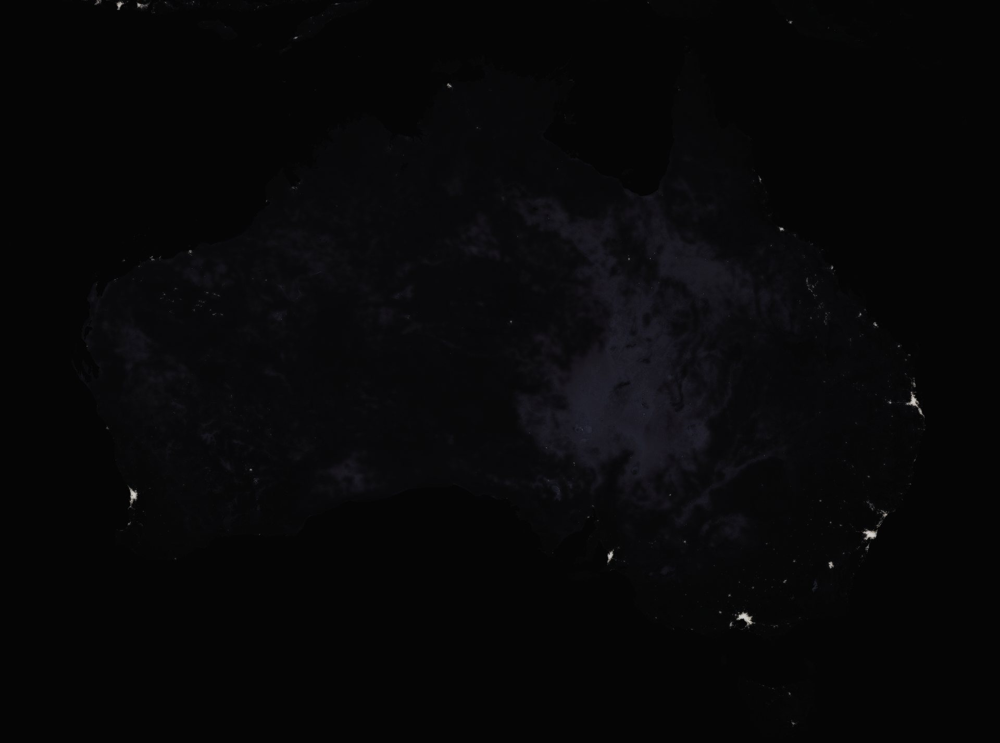

A Southern Hemisphere terrestrial node for recovery, feedstock, and energy — coupled with CrystalCore, a local-first intelligence layer built for the real constraints of distance.
The sitting is the work.

Every map of the world for two thousand years had a gap at the bottom. Cartographers filled it with a continent they had never visited, because the shape of the world seemed to require one — a counterweight, a balance, something to hold the south down. They called it the Unknown Southern Land and drew its coastline with total confidence.
They were wrong about the coastline. They were right that something had to be there.
That instinct is worth taking seriously again, at a different scale. A civilisation reaching for more than one world has the same problem the old maps had: everything is concentrated at the top, and the bottom is a blank that someone assumes will sort itself out. The blank is where the redundancy has to go.
A night survey lights the coasts. The interior, and the people who were here first, do not show as gold. They are not a blank. Free, Prior and Informed Consent stays above the legal minimum — a standard, not a chorus.
Appin, Wollondilly, is one named place on that map — Dharawal country, Cataract Gorge. On 17 April 1816 a camp was raided by the 46th Regiment; at least fourteen people were killed. The site was added to the NSW Heritage Register in 2022. On 24 July 1979 fourteen men died in the Appin colliery methane explosion. Aerotropolis West sits in the same south-west basin. That is not one nation claimed for the whole of Western Sydney, and it is not a site selection. It is why the unlit interior is not treated as empty, and why the dead are not a hook.
Map: NASA Black Marble 2016 (Suomi NPP VIIRS). Public domain. Credit: NASA Earth Observatory / Joshua Stevens, VIIRS data Miguel Román, NASA GSFC. Presentation: 1994, desaturated. Interior left unlit. No cities added. This is not a costume. The dead are not a hook. The map is tonight.
Multiplanetary civilisation requires more than launch capacity. It requires redundant recovery and refurbishment geography, local feedstock and energy for propellant and power, high-latency fail-safe intelligence that does not depend on continuous Earth cloud links, and strategic depth that is not concentrated in a single hemisphere.
Current Starship architecture is heavily weighted toward northern and equatorial U.S. sites. Southern Hemisphere physical and sovereign capacity remains underdeveloped relative to the scale of the ambition.
Deep-water port and heavy industry already exist. Critical minerals at global scale. Existing dual-use foundations support re-entry monitoring and recovery. The question is orientation, not greenfield build.
Bradfield / Badgerys Creek / Kemps Creek employment lands beside Western Sydney International (Nancy-Bird Walton). Passenger opening 25 October 2026 is public. The precinct exists. Compute and robotics plant is proposed — not a contracted load.
A local-first, consent-native intelligence layer. Core function doesn't require continuous links. Fail-safe state is local isolation, not fail-open. Continuity of decision-making and memory is a hard constraint.
Pilbara and Arkaroola-class environments offer real-world remote-ops training and testbed-scale ISRU proving ground — plot scale, not continental scale.
No site work proceeds over an identified sacred site or songline path without Free, Prior and Informed Consent from Traditional Owners — a standard held above legal minimums, not aspirational language.
A technical reader does not need fourteen documents. The Review Pack is one sitting: the consent and latency rules in prose, a two-page geographic brief with no mythos, and a thirty-day evaluation licence covering software only. It is not document 15. There are no toys on this site.
Read the sitting. Consent fails closed. The brief selects no site. Aerotropolis West is named as a precinct, not as a contracted load.
Two campuses, one rule. Aerotropolis West and Westmead. Invitation, not a contract. Not an official xAI / Neuralink project.
CrystalCore and Clementine, thirty days, non-production. The proposal on this site stays All Rights Reserved.